Dados para dia 2021-05-31
Confirmados
Amostras vs. Confirmados
Média 7 dias de amostras Total, PCR, e Antigénio, do lado esquerdo, vs. média 7 dias de confirmados. Usado para ver picos de testagem por exemplo no início da escola.
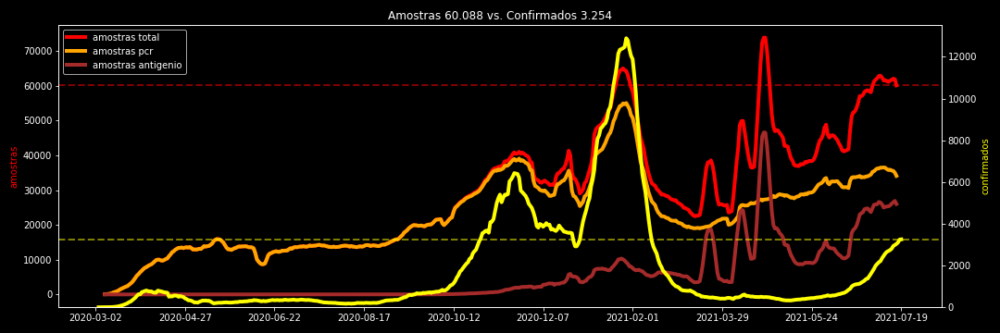Hospitalização
Variação Internados Enfermaria
Variação internados enfermaria diários, média 7 dias, médias 14 dias, e variação da variação semanal (7diff).
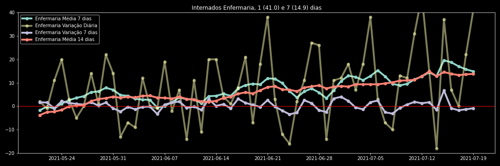Variação Internados UCI
Variação internados UCI diários, média 7 dias, médias 14 dias, e variação da variação semanal (7diff).
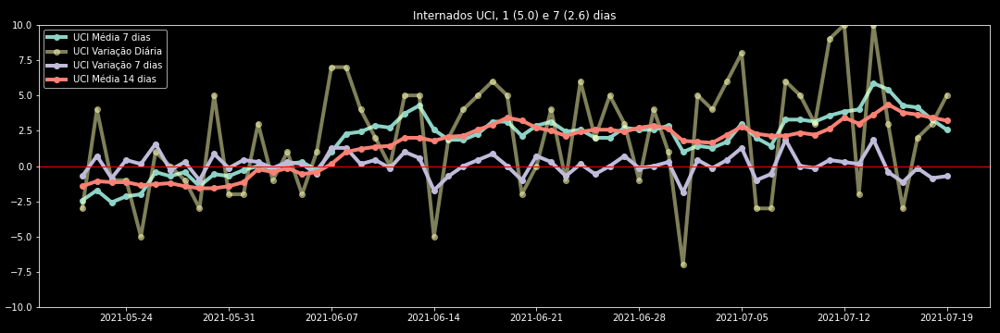Incidência
Incidência a 14 dias por 100k, Nacional, e para cada região. Assumido verde abaixo de 60, amarelo de 60 inclusivé a 120, laranja até 240, vermelho até 480, vermelho escuro até 960, e castanho acima. Esperemos não voltar sequer ao laranja.
Incidência Nacional
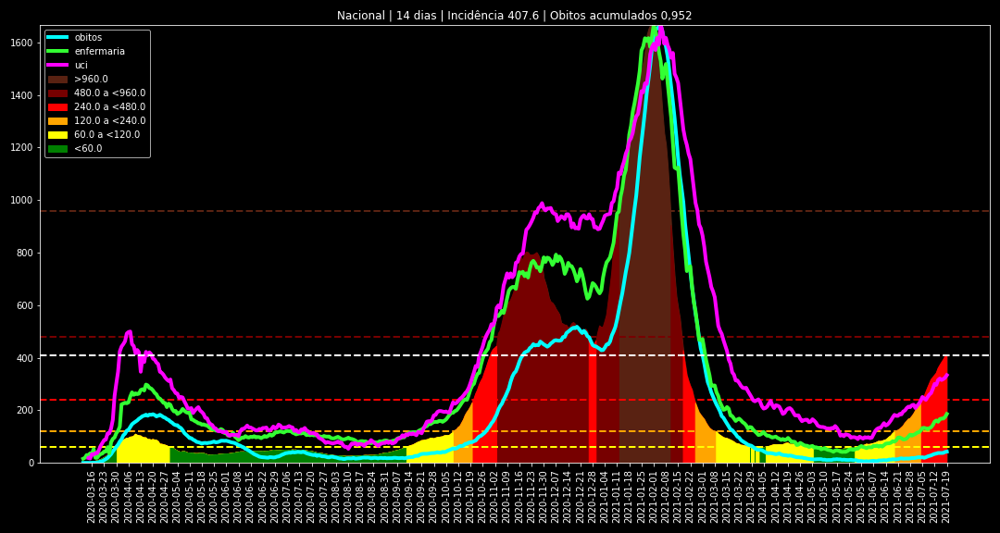Incidência Norte
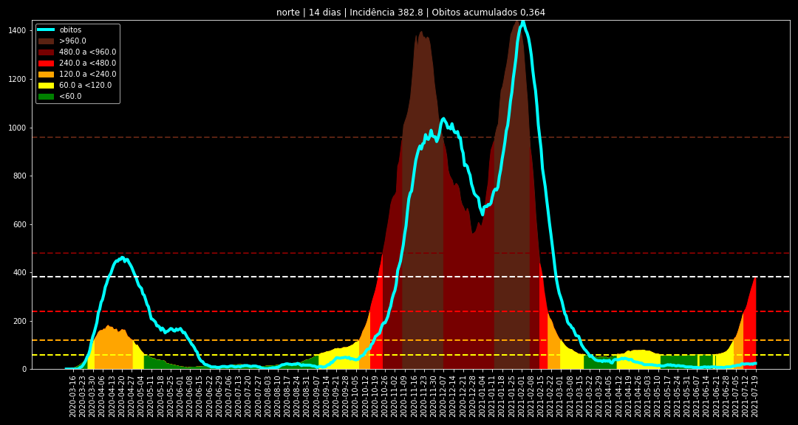Incidência Centro
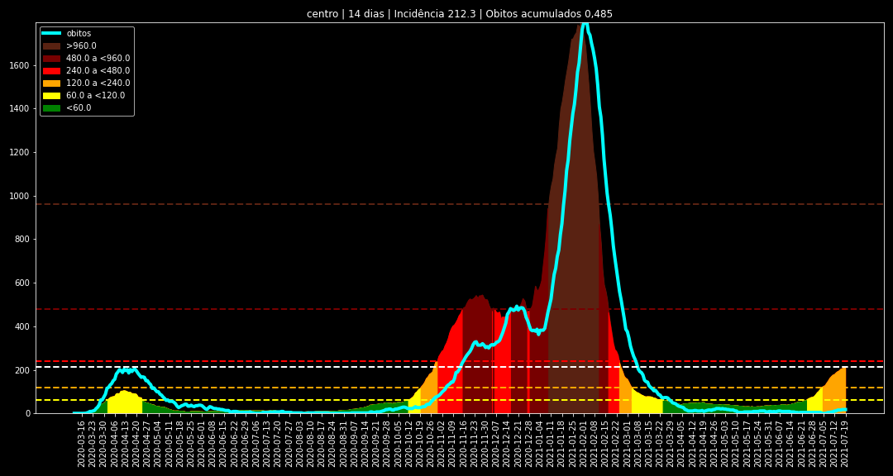Incidência LVT
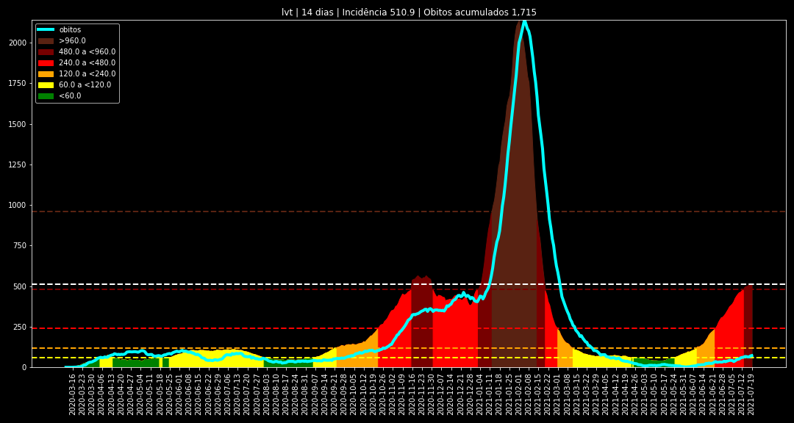Incidência Alentejo
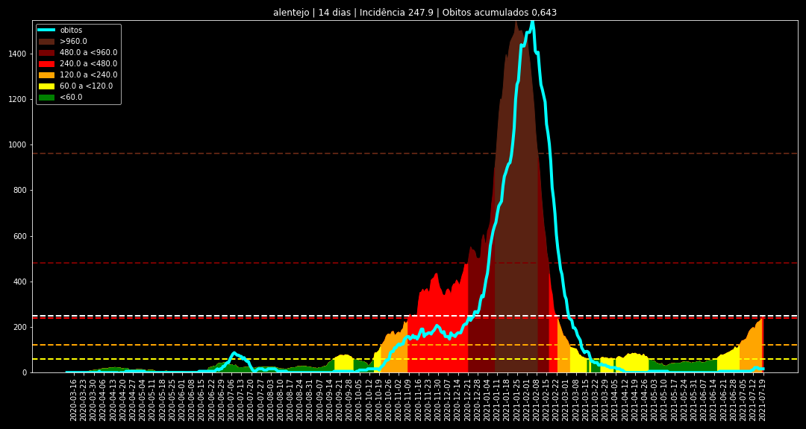Incidência Algarve
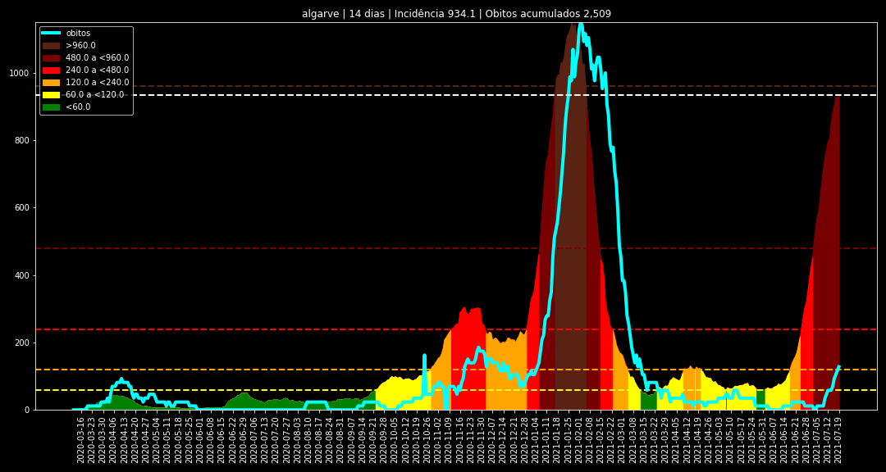Incidência Madeira
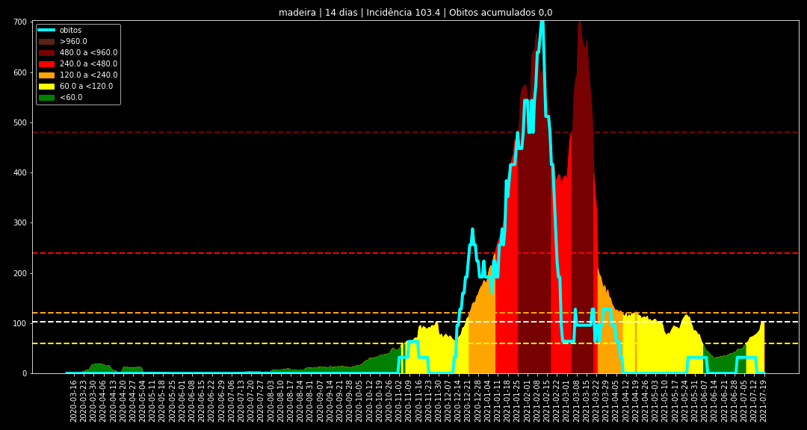Incidência Açores
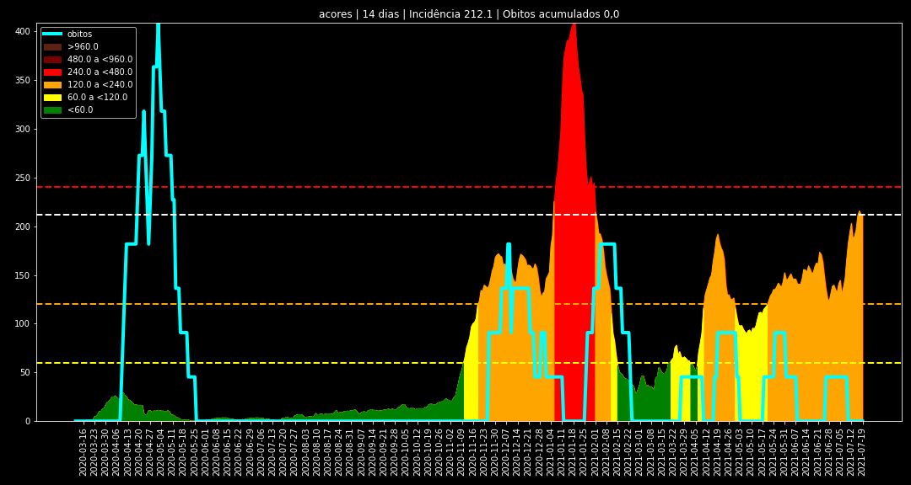Rt

Vacinação ECDC
Dados semanais publicados na ECDC e incluindo a divisão por tipo de vacina, permitindo o cálculo da previsão de "totalmente vacinado" usando os dados da primeira dose e assumindo a segunda dose no futuro - Moderna 28 dias / 4 semanas, Pfizer 28 dias / 4 semanas (21 dias / 3 semanas antes), AstraZeneca 84 dias / 12 semanas, e Janssen entrando logo como vacinado.
Nota: os valores da semana mais recentes podem não estar actualizados, o que pode indicar o ponto mais recente a linha da vacinação real estar mais abaixo que a previsão. Isto geralmente corrige-se passado uns dias, ou na semana seguinte.
Vacinas ECDC Previsão
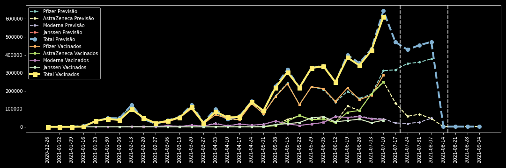Vacinas ECDC Previsão Total
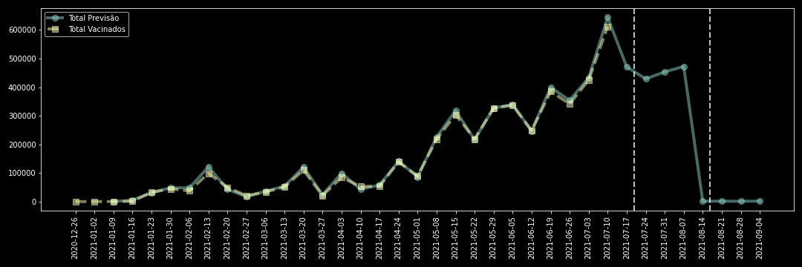Vacinas ECDC Previsão Pfizer
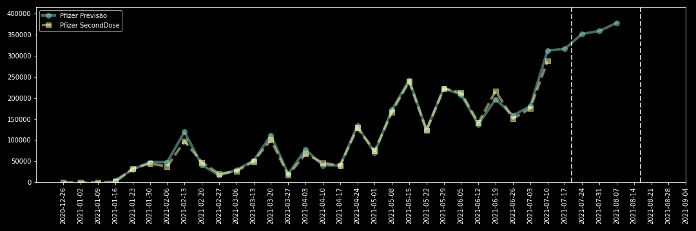Vacinas ECDC Previsão Moderna
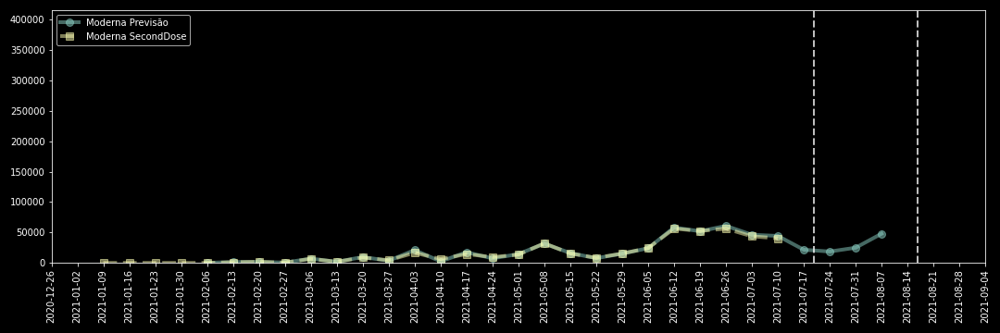Vacinas ECDC Previsão AstraZeneca
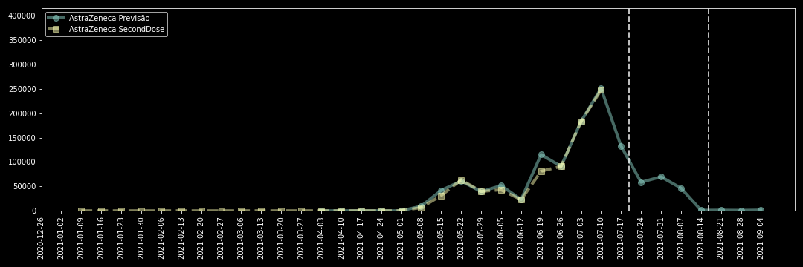Vacinas ECDC Previsão Janssen

Vacinas ECDC Previsão Acumulado

Dados e código disponível em Repo COVID19 da DSSG-PT.